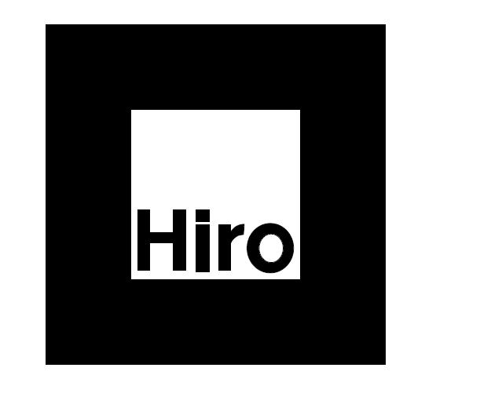

Show this page on another screen, or print it. Open Little Reef on your phone and point its camera at the entire square. Leave the white border visible.

Back to the aquarium
Marker source: AR.js project. This page does not request camera access.